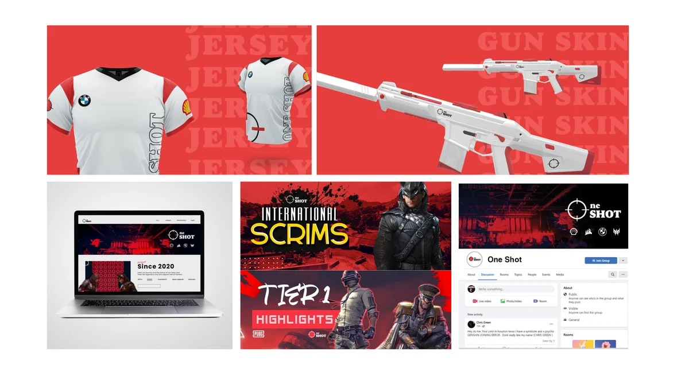
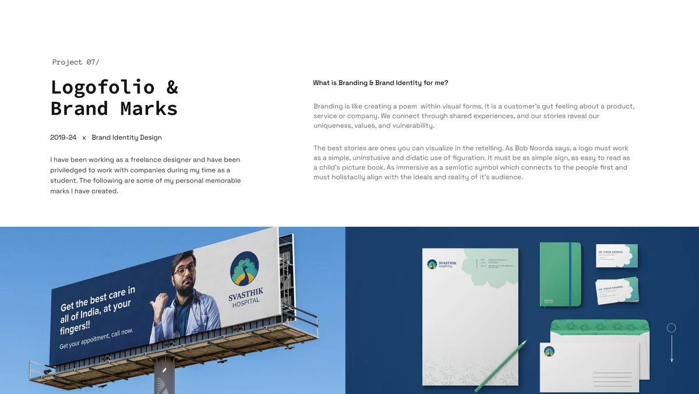
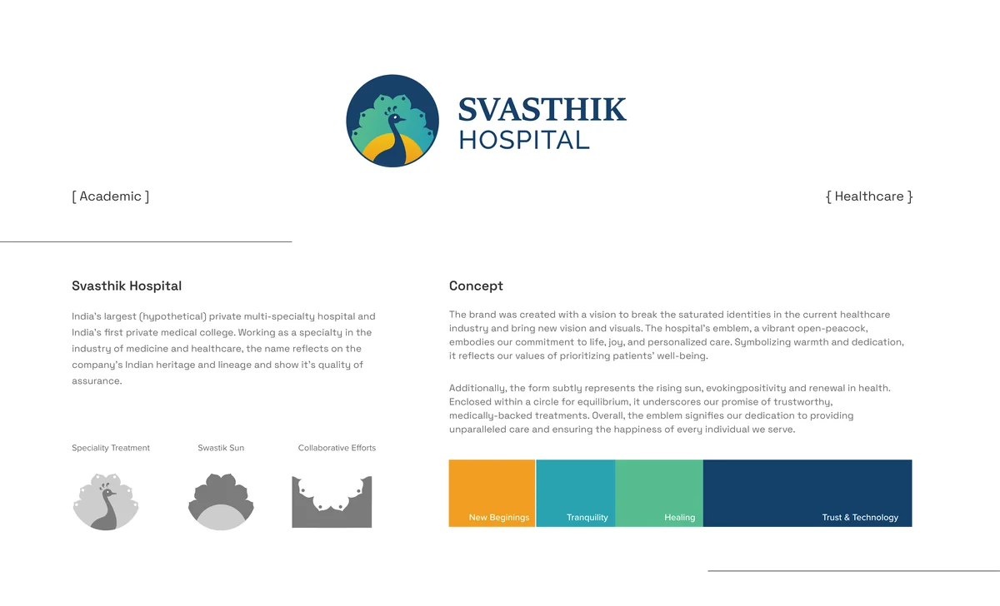
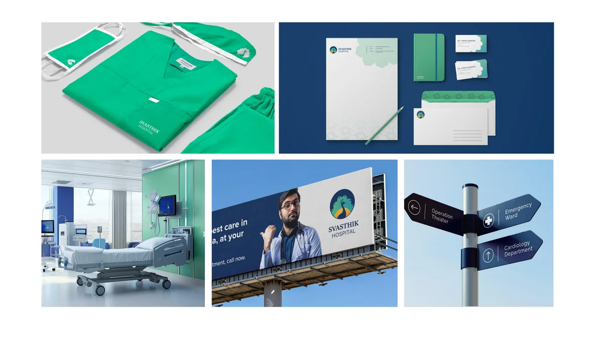
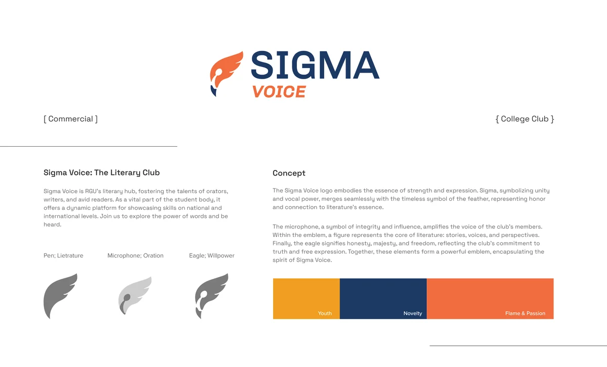
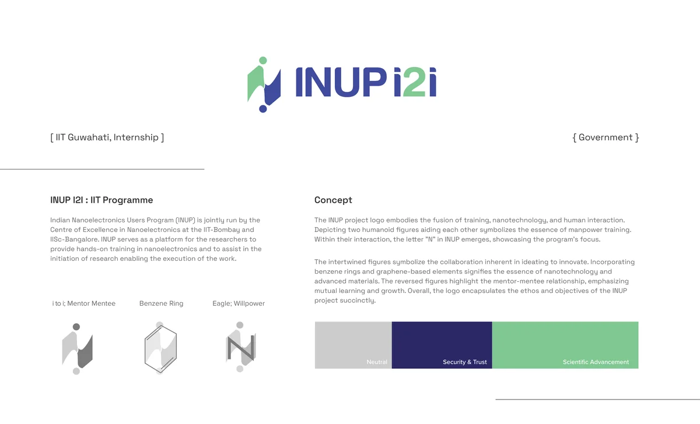
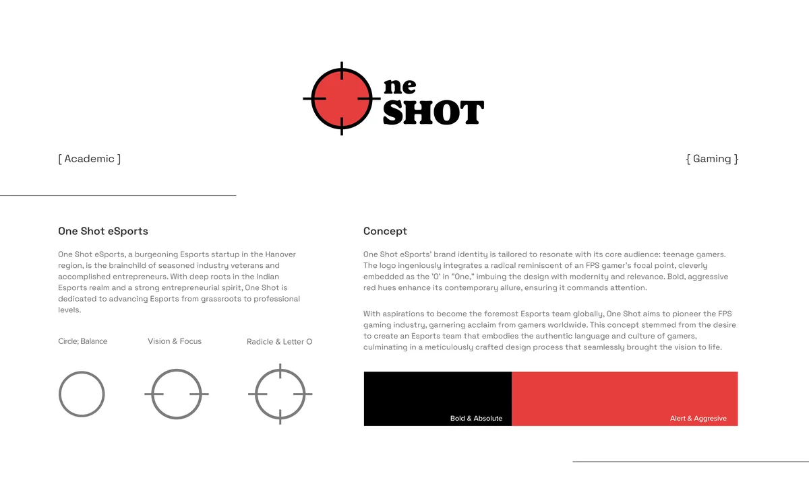

Four brand identities across healthcare, a college club, a government programme and gaming, drawn between 2019 and 2024.
A mark must be as immersive as a semiotic symbol which connects to the people first and must holistically align with the ideals and reality of its audience. Each identity in this collection began with that principle: understand the audience before drawing a single stroke.
A hypothetical brand: India's largest private multi-specialty hospital and first private medical college. The brand was created with a vision to break the saturated identities in the current healthcare industry and bring new vision and visuals.

The hospital's emblem, a vibrant open-peacock, embodies commitment to life, joy, and personalized care. Symbolizing warmth and dedication, it reflects values of prioritizing patients' well-being. Additionally, the form subtly represents the rising sun, evoking positivity and renewal in health. Enclosed within a circle for equilibrium, it underscores the promise of trustworthy, medically-backed treatments.


Key concepts: Specialty Treatment, Swastik Sun, Collaborative Efforts, New Beginnings, Tranquility, Healing, Trust & Technology.
Sigma Voice is RGU's literary hub, fostering the talents of orators, writers, and avid readers. As a vital part of the student body, it offers a dynamic platform for showcasing skills on national and international levels.
The logo embodies strength and expression. Sigma, symbolizing unity and vocal power, merges with the timeless symbol of the feather, representing honor and connection to literature's essence. The microphone, a symbol of integrity and influence, amplifies the voice of the club's members. Within the emblem, a figure represents the core of literature: stories, voices, and perspectives. The eagle signifies honesty, majesty, and freedom.


Key concepts: Youth, Novelty, Flame & Passion, Pen/Literature, Microphone/Oration, Eagle/Willpower.
Indian Nanoelectronics Users Program (INUP) is jointly run by the Centre of Excellence in Nanoelectronics at IIT-Bombay and IISc-Bangalore. INUP serves as a platform for researchers to provide hands-on training in nanoelectronics and to assist in the initiation of research.
The logo depicts two humanoid figures aiding each other, symbolizing the essence of manpower training. Within their interaction, the letter "N" in INUP emerges, showcasing the program's focus. The intertwined figures symbolize the collaboration inherent in ideating to innovate. Incorporating benzene rings and graphene-based elements signifies the essence of nanotechnology and advanced materials.


One Shot eSports, a burgeoning Esports startup in the Hanover region, is the brainchild of seasoned industry veterans and accomplished entrepreneurs. With deep roots in the Indian Esports realm and a strong entrepreneurial spirit, One Shot is dedicated to advancing Esports from grassroots to professional levels.
The brand identity is tailored to resonate with teenage gamers. The logo integrates a crosshair reminiscent of an FPS gamer's focal point, cleverly embedded as the "O" in "One," imbuing the design with modernity and relevance. Bold, aggressive red hues enhance its contemporary allure.
Key concepts: Bold & Absolute, Alert & Aggressive, Circle/Balance, Vision & Focus, Radical & Letter O.
Shreyo Debnath · Designer